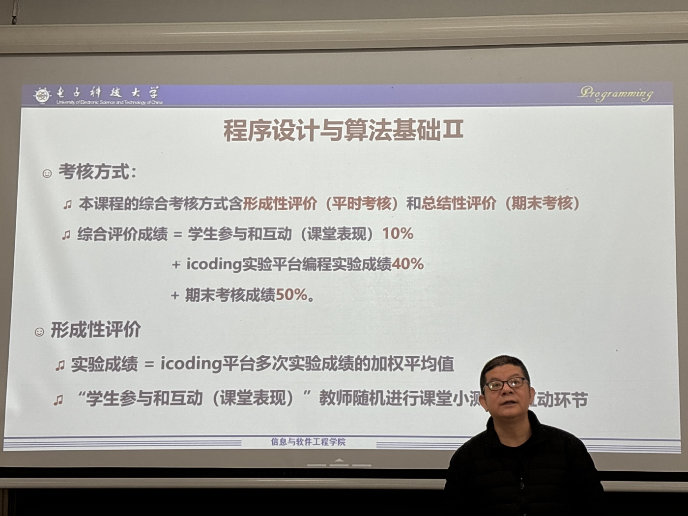
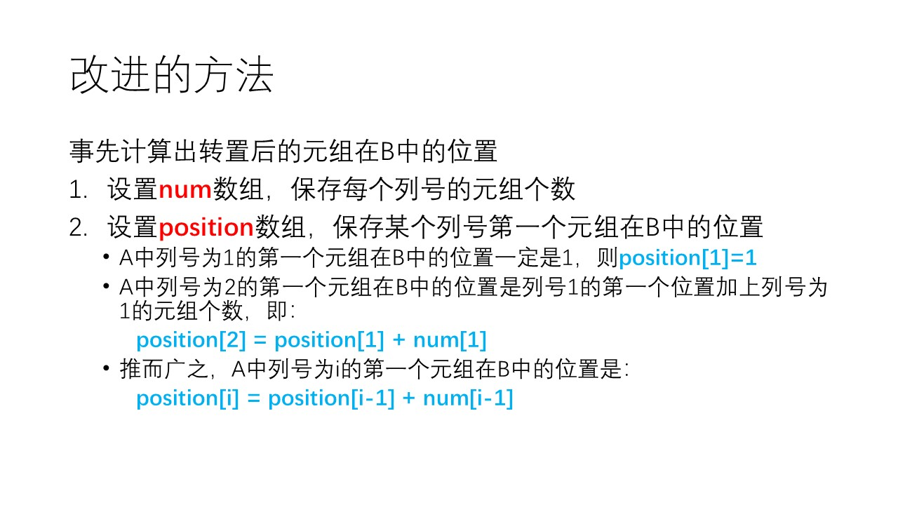
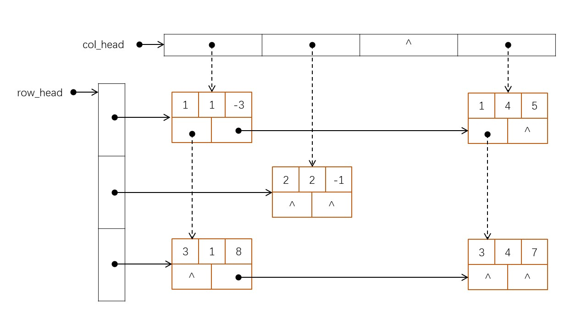
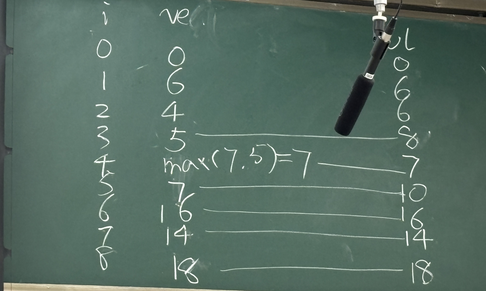
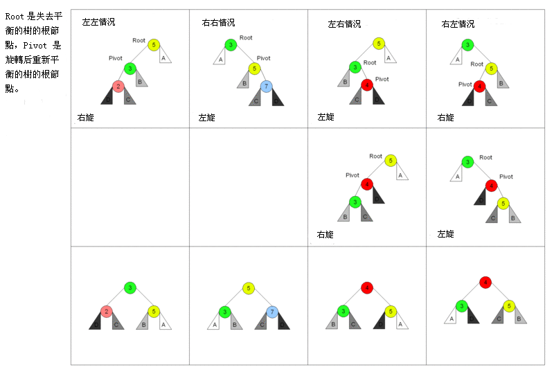
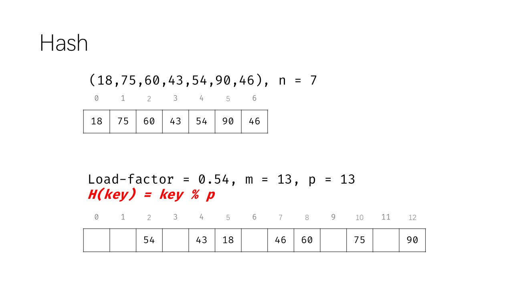
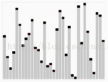
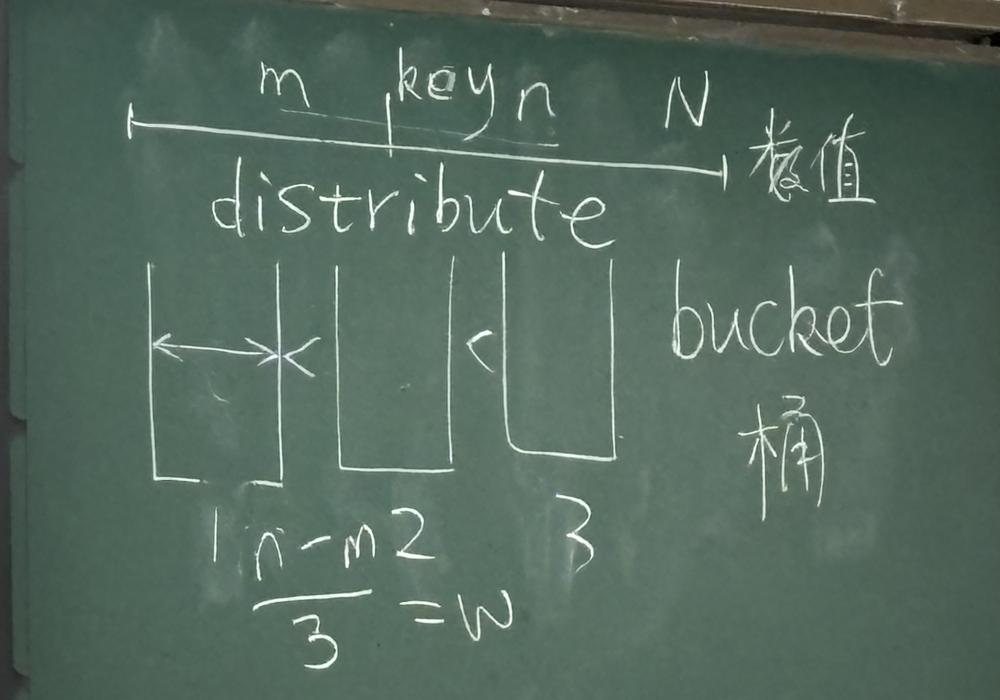

程序设计与算法基础II 笔记
成绩构成

- 期末仍然是机考
24.2.28 概览
- DS - 数据库 的缩写
- AIGC - ai 内容生成
在 AI gc 的时代，实际上是给软件工程开辟了一片蓝海...
指针 是 结构化类型，但是 指针值 是个 简单值。
1、数据结构
散列结构
一群没有关系的数据。
线性结构（linear）
链表、数组 都属于 线性结构。
使用 循环 遍历。
树形结构（tree）
- 树形结构 是一种典型的 层次结构（layer）。如 树状图。
- 使用 递归 遍历。
- 一般我们都会把树形结构简化成 二叉树（每个 根 都有两个 子树）。
特点
- 从
根分裂出来的子树不相交。
两种关系：
- is a
- has a
has a（组合/聚集）
如，Computer has a CPU
is a
如，brid is a animal
图（网）状结构（graph）
2、代码
- 代码首先要具有 可读性。
- 代码还要有健壮性。即 代码要进行充分的测试。
3、复杂度
时间复杂度
即 代码需要计算的次数
使用 大 O 表示法 来表示
计算算法计算次数多项式的最高次项。
如：
void f1() {
int i, j, k;
for (i = 0; i <= 100; ++i)
for (j = 0; j <= 100; ++j)
for (k = 0; k <= 100; ++k)
if (i + j + k == 100 && 15 * i + 9 * j + k == 300)
printf("%d, %d, %d\n", i, j, k);
}
- 时间复杂度是 $O(n^3)$
空间复杂度
即 除代码本身之外，执行代码需要用到的内存。
调用一个函数就会在系统堆栈中生成一个调用帧（占用一定的内存）。所以，递归 占用内存空间。
同样使用 大 O 表示法 。
计算 递归次数 多项式的最高次项。
如：
//辗转除法的递归形式，代码更加简洁
int gcd3(int a, int b) {
if (a < b) return gcd3(b, a);
return b == 0 ? a : gcd3(b, a % b);
}
时间 和 空间 总是一对矛盾的关系
24.3.6 线性表（seqlist）
逻辑结构和存储结构一般不同：内存结构是线性的，复杂的逻辑结构存储到内存中时要被 展平。
1、线性表（seqlist）
seq - sequential（顺序的）
定义
#pragma once
#define __LIST_TYPE__ "顺序表"
#define MAXSIZE 100 //此处的宏定义常量表示线性表可能达到的最大长度
typedef struct SeqList {
ElemType elem[MAXSIZE]; //线性表占用的数组空间
int last; //记录线性表中最后一个元素在数组elem[]中的位置（下标值），空表置为-1
} SeqList, LList, *LListPtr;
- 线性表 是 线性结构（list，表）
- 描述方法：ADT（抽象数据类型）
- interface - n. 接口
边界条件
- 链表为空
- 只有一个 数据节点
编码实现
- 数据抽象
- 逻辑抽象
数组 是 实现线性表的首选。
C 中的数组是 定长的（不考虑 C99 中的动态数组）
- capacity - 容量（一般指最大容量）
- lens / size - 大小（指线性表中存储内容的实际大小）
插入和删除
见 paf 目录
24.3.13 链表（linklist）
1、链表（linklist）
定义
#define __LIST_TYPE__ "单链表"
typedef struct _node {
ElemType data;
struct _node *next;
} Node, *NodePtr, LList, *LListPtr;
初始化
bool InsList(LListPtr L, int i, ElemType e) {
NodePtr p = L;
int k = 1;
//从头开始移动工作指针，同时计数，数到i-1，即找到要插入位置的前一个位置
//TODO
for (; p != NULL && k < i; ++k) {
p = p->next;
}
//如果遍历完了链表，还没有数到i-1，则说明插入位置不合理
if (p == NULL)
return false;
//生成新节点并插入到结点p之后
NodePtr q = (NodePtr) malloc(sizeof(Node));
q->data = e;
q->next = p->next;
p->next = q;
return true;
}
2、循环单链表（circlelist）
定义
#define __LIST_TYPE__ "循环单链表"
typedef struct _node {
ElemType data;
struct _node *next;
} Node, *NodePtr, LList, *LListPtr;
初始化
void InitList(LListPtr *L) {
(*L) = (NodePtr)malloc(sizeof(Node));
//TODO
(*L)->next = *L;
}
- 与 linklist 的不同之处就在 初始化
注意操作链表的边界条件：链表为空；只有一个数据节点
3、双向链表（doublelist）
定义
#define __LIST_TYPE__ "双向链表"
typedef struct _node
{
ElemType data;
struct _node *next, *prior;
} Node, *NodePtr, LList, *LListPtr;
初始化
void InitList(LListPtr *L) {
(*L) = (NodePtr)malloc(sizeof(Node)); //生成头结点
(*L)->prior = (*L)->next = NULL; //头结点的指针域为空
}
插入
双向链表的知识中重点是插入的操作
bool InsList(LListPtr L, int i, ElemType e) {
NodePtr p = L;
int k = 1;
while (p != NULL && k < i) {
p = p->next;
++k;
}
if (p == NULL) return false;
NodePtr s = (NodePtr)malloc(sizeof(Node));
s->data = e;
//TODO
if (p->next == NULL) {
s->next = NULL;
s->prior = p;
p->next = s;
}
else {
// 先从 s 的角度来看
s->next = p->next;
s->prior = p;
p->next->prior = s;
p->next = s;
}
return true;
}
4、双指针链表
定义
#define __LIST_TYPE__ "增强的带头尾双指针的单链表"
//定义节点类型
typedef struct _node {
ElemType data;
struct _node *next;
} Node, *NodePtr;
//定义链表类型
typedef struct {
NodePtr head; //头指针
NodePtr tail; //尾指针
unsigned len; //节点数
} LList, *LListPtr;
注：
（1）ICODING 的线性表习题中基本都会用到双指针
（2）快慢指针经典应用，判断链表中有没有 环 。
慢指针走一步，快指针走两步，如果有环的话，总有一个时刻他们两个会相遇。
（3）节点链接：先链后再链前
1、理解多项式相加代码；2、理解merge代码（教材有答案）
24.3.20 栈（stack）和队列（queue）
1、栈（stack）
术语
- 栈顶指针（top）
- 栈溢出（stack overflow）
- 如：栈溢出导致栈中的恶意代码被顶到栈外从而被错误执行，导致下载木马病毒。
- 栈下溢（stack underflow）
- 压栈（入栈）（push）
- 即 将数据放入栈中
- 弹栈（出栈）（pull）
- 即 将数据从栈中取出
- 弹栈之后，栈顶指针之前的数据实际还在，只是无法被访问了。
类别
见 paf 仓库
- 顺序栈
- 用 数组 实现。
- 栈顶指针 是 下标
- 链栈
- 用 链表 实现。
- 操作 都在头节点后进行。

区别
顺序栈有容量限制，而链栈没有容量限制
使用 栈 填充图像
- 深度（depth）填充 优先，即 优先向一个方向填充。
递归法
代码（c）：
void boundaryfill(GRAPH g, int seedx, int seedy) // 递归
{
char *p = &g[seedy][seedx];
if (*p == boundary_color || *p == fill_color) return;
*p = fill_color;
boundaryfill(g, seedx - 1, seedy);
boundaryfill(g, seedx + 1, seedy);
boundaryfill(g, seedx, seedy - 1);
boundaryfill(g, seedx, seedy + 1);
}
- 递归：在 某个函数中 使用此函数本身
- 但是 递归的效率 太 低
不使用递归法
伪代码：
push(seed)
while (!stack_empty) {
seed = pop()
fill(seed)
push(上，下，左，右)
}
C：
void boundaryfill(GRAPH g, int seedx, int seedy) {
StackPtr S;
Coord c = { seedx, seedy }, t;
Coord next[4] = { {0, -1}, {1, 0}, {0, 1}, {-1, 0}};
int i;
InitStack(&S);
Push(S, c);
while (!IsEmpty(S)) {
Pop(S, &c);
g[c.y][c.x] = fill_color;
for (i = 0; i < 4; ++i) {
t.x = c.x + next[i].x;
t.y = c.y + next[i].y;
if (g[t.y][t.x] == boundary_color || g[t.y][t.x] == fill_color) continue;
Push(S, t);
}
}
ClearStack(S);
}
2、队列（queue）
- 必须从队尾插入新元素，队列中的元素只能从队首出
队头指针 - front； 队尾指针 - rear
分类
1、循环顺序队列（用数组实现）
定义
#define __QUEUE_TYPE__ "循环顺序队列"
#define MAXSIZE 50 /*队列的最大长度*/
typedef struct
{
QueueElementType element[MAXSIZE]; /* 队列的元素空间*/
int front; /*头指针指示器*/
int rear; /*尾指针指示器*/
} SeqQueue, Queue, *QueuePtr;
2、链队列
定义
#define __QUEUE_TYPE__ "链队列"
typedef struct Node {
QueueElementType data; /*数据域*/
struct Node *next; /*指针域*/
} LinkQueueNode, *LinkQueueNodePtr;
typedef struct {
LinkQueueNode *front; // 指向头节点的指针（头节点中没数据，头节点后面一个节点才是链表的第一个节点）
LinkQueueNode *rear; // 指向哨兵前面一个节点的指针
} LinkQueue, Queue, *QueuePtr;
指针移动顺序
入队：先填入元素，再向后移动队尾指针
出队：先移动队头指针，再弹出元素
- 这就导致，front 指针指向的位置总是有元素的，而 rear 指针指向的位置总是空的。

判断队空队满
- 如果 front == rear，则 队空
- 如果 rear + 1 == front，则 队满
这样 front 之前的那个单元总不能填入数据。牺牲一个单元不用，来换取 轻易的判断队空队满。
使数组顺序队列能够重复利用
使数组队列能够循环，从而使其可以重复利用

方法：
每次都令 下标 对 数组长度 取模。
这样当 下标 为 数组长度时，取模后下标就 变味 0
代码
static int _modinc(int x) {
return (x + 1) % MAXSIZE;
}
bool EnterQueue(QueuePtr Q, QueueElementType x) {
/*将元素x入队*/
if (IsFull(Q)) /*队列已经满了*/
return false;
//TODO
Q->element[Q->rear] = x;
Q->rear = _modinc(Q->rear);
return true; /*操作成功*/
}
使用 队列 填充图像
与 使用栈填充图像 的思路一致，只是填充顺序改变。
- 广度优先
使用栈填充图像的顺序为 深度优先；而使用队列填充图像的顺序为 广度优先
注
1、侵入式链表
指针域指向下一个链表的指针域，而不是指向下一个链表。
在 Unix 系统中非常常见
2、适配器（adaptor）
加在线性表中的限制性的一种东西
如：栈（stack）和 队列（queue）
作业：补全 链队列 的代码；预习 表达式求值。
24.3.27 串（string）
1、编码问题
一个 ASCII 码精确的占据 1 字节（1 Byte）。
现在最先进的编码是 Unicode，最常用的是 UTF-8。
- 在 UTF-8 中，一个汉字占据 3 个 Byte。
- 在 GBK 中，一个汉字占据 2 个 Byte。
所以，在不是只有英文字符的串中，串的长度是不能确定的。（在不同的编码下，非英文字符占据的长度是不同的。）
这个现象被称为 Multi-Byte。
在实际开发中，要尽量避免这种情况的发生。
2、定长字符串
（1）顺序串（seqstring）
定义：
#define MAXSIZE 128
typedef struct {
char ch[MAXSIZE];
int len;
} String;
插入的情况

（2）堆串（heapstring）
定义
#include <stdbool.h>
#define __STRING_TYPE__ "堆串"
typedef char CHAR;
typedef struct {
CHAR *ch;
int len;
} String, *StringPtr;
因为 c语言 中 数组定长，所以要使用 malloc 函数为数组分配相应空间
int StrAssign(StringPtr s, CHAR *t) {
//TODO
s->len = strlen(t);
s->ch = (CHAR*)malloc(s->len); // malloc 的 基本单位 是 Byte。\ 而 一个 英文字符 所占据的内存是 1 Byte
strncpy(s->ch, t, s->len);
return s->len;
}
- 不只是 malloc 的基本单位是 Byte，c语言 中的基本单位就是 Byte
3、非定长字符串
（1）块链串（blstring）
定义

......
4、字串匹配算法
（1）Brute-Force（BF，暴力搜索算法）
也就是 暴力搜索（Brute）

时间复杂度：$O(slen*tlen)$
（2）KMP 算法
不需要去啃代码，计算 next 数组的代码非常难以看懂，理解思路即可。
充分利用 子串的特征
这就需要一张 表


计算 next 数组的程序算法
static void Getnext(StringPtr t, int next[]) {
int j = 0, k = -1;
next[0] = -1;
while (j < t->len - 1) {
if (k == -1 || t->ch[j] == t->ch[k]) {
if (t->ch[++j] == t->ch[++k])
next[j] = next[k];
else
next[j] = k;
} else
k = next[k];
}
}
手工计算 next 数组

KMP算法
int StrIndex(StringPtr s, int pos, StringPtr t) {
int next[MAXLEN], i = pos, j = 0;
Getnext(t, next);
while (i < s->len && j < t->len) {
if (j == -1 || s->ch[i] == t->ch[j]) {
++i;
++j;
} else
j = next[j]; // j 回退
}
return j >= t->len ? i - t->len : -1;
}
注
1、c 语言中内存的基本单位是 Byte
- 如
size_t/sizeof的单位都是 Byte
如这段代码：
int StrAssign(StringPtr s, CHAR *t) {
//TODO
s->len = strlen(t);
s->ch = (CHAR*)malloc(s->len); // malloc 的 单位 是 Byte。\ 而 一个 英文字符 所占据的内存是 1 Byte
strncpy(s->ch, t, s->len);
return s->len;
}
24.4.3 数组（array）
特点：
- 定长
- 顺序（sequential）
1、稀疏矩阵
0 元的数量要比非 0 元多的多
三元组表示
定义：
#define MAXSIZE 50 /*非零元素的个数最多为1000*/
#define ElementType int
/*稀疏矩阵三元组表的类型定义*/
typedef struct {
int row, col; /*该非零元素的行下标和列下标*/
ElementType e; /*该非零元素的值*/
} Triple;
typedef struct {
int m, n, len; /*矩阵的行数、列数和非零元素的个数*/
Triple data[MAXSIZE + 1]; /* 非零元素的三元组表。data[0]未用*/
} TSMatrix;
稀疏矩阵的转置算法
TSmatrix.c
algo 5.2
思路：

代码：
void TransposeTSMatrix(TSMatrix *from, TSMatrix *to) {
int i, j, k;
to->m = from->n;
to->n = from->m;
to->len = from->len;
if (to->len == 0)
return;
j = 1;
for (k = 1; k <= from->n; ++k) //按升序的列号
for (i = 1; i <= from->len; ++i) //扫描原矩阵的每一行
if (k == from->data[i].col) {
to->data[j].row = from->data[i].col;
to->data[j].col = from->data[i].row;
to->data[j].e = from->data[i].e;
++j;
}
}
时间复杂度：$O(n*len)$
- 时间复杂度过大
优化：algo 5.1
思路：



void FastTransposeTSMatrix(TSMatrix *from, TSMatrix *to) {
to->len = from->len;
to->n = from->m;
to->m = from->n;
if (to->len) {
int i, j, col;
int num[MAXSIZE], position[MAXSIZE];
//计算每一列的非零元素的个数，存到num数组中
for (i = 1; i <= from->n; ++i)
num[i] = 0;
for (i = 1; i <= from->len; ++i)
++num[from->data[i].col];
//计算位置
//求col列中第一个非零元素在to.data[]中的正确位置*/
position[1] = 1;
for (col = 2; col <= from->n; ++col)
position[col] = position[col - 1] + num[col - 1];
//将被转置矩阵的三元组表from从头至尾扫描一次，实现矩阵转置
for (i = 1; i <= from->len; ++i) {
col = from->data[i].col;
j = position[col];
to->data[j].row = from->data[i].col;
to->data[j].col = from->data[i].row;
to->data[j].e = from->data[i].e;
++position[col]; /* position[col]加1，指向下一个列号为col的非零元素在三元组表to中的下标值*/
}
}
}
时间复杂度：$O(n+len)$
2、十字链表（Cross list）
本质是二维链表
定义
typedef struct OLNode {
int row, col; /*非零元素的行和列下标*/
int value;
struct OLNode *right; /*非零元素所在行表、列表的后继链域*/
struct OLNode *down;
} OLNode, *OLink;
typedef struct {
OLink *row_head; /*行、列链表的头指针向量*/
OLink *col_head;
int m, n, len; /*稀疏矩阵的行数、列数、非零元素的个数*/
} CrossList;
- 可以代表 稀疏矩阵 的一个非零元
可视化：

24.4.10 树（tree）
1、二叉树
root - 根节点； leaf - 叶节点（最后面的节点）； degree - 度（与某个节点相关的节点数量）； parent node - 双亲节点（即某节点的前驱）； children node - 子节点； ancestor node - 祖先节点； descendant node - 子孙节点； sibling（兄弟姐妹） node - 兄弟节点； cousin（同辈表亲） node；
树的高度 = 最高子树高度 + 1
分类
1、满二叉树
2、 完全二叉树
定义：完全二叉树是由满二叉树而引出来的，若设二叉树的深度为h，除第 h 层外，其它各层 (1～h-1) 的结点数都达到最大个数（即1~h-1层为一个满二叉树），第 h 层所有的结点都连续集中在最左边，这就是完全二叉树。
图示：

性质
- $n$ 层的满二叉树有 $2^n-1$ 个节点。
- 满二叉树 是特殊的 完全二叉树。
- 对于某个节点 $k$，其 parent 是 $[k/2]$ (向下取整)，left child 是 $2k$，right child 是 $2k+1$。
- 完全二叉树中，编号为 k 的节点在 $[log_2k]+1$ 层。
定位串
先序定位串
以
A
/ \
B C
为例，它的先序定位串为 AB..C.. 。
解释：A 的 左子树 为 B，B 的 左子树为 空（.）右子树为空（.），A 的右子树为 C，C 的 左子树为 空（.）右子树为空（.）。
在以
A
/
B
/
C
为例，它的先序定位串为 ABC.... 。
代码定义
#define __TREE_TYPE__ "二叉树"
typedef struct TreeNode {
DataType data;
struct TreeNode *LChild;
struct TreeNode *RChild;
} BiTNode, *BiTree;
DataType：
typedef struct {
char tag; //节点的字母标签域。
char s[16]; //节点的字符串值。这个值从对照表中来
int i; //节点的整型值，由s转换而来。一般情况下，s和i只用其一
int bf; //为今后的应用保留的
} DataType;
二叉树的遍历
方法一：先序遍历法（DLR）
分四步：
- 判断树是否为空
- 遍历根节点
- 递归遍历左子树 // 不用管 左子树的结构是什么，多么复杂。
- 递归遍历右子树
代码：
void PreOrder(BiTree root, CALLBACK Visit) {
if (root == NULL) return;
Visit(root->data);
PreOrder(root->LChild, Visit);
PreOrder(root->RChild, Visit);
}
方法二：中序遍历法（LDR）
分四步：
- 判断树是否为空
- 递归遍历左子树
- 遍历根节点
- 递归遍历右子树
代码：
void InOrder(BiTree root, CALLBACK Visit) {
if (root == NULL) return;
InOrder(root->LChild, Visit);
Visit(root->data);
InOrder(root->RChild, Visit);
}
方法三：后序遍历法（LRD）
分四步：
- 判断树是否为空
- 递归遍历左子树
- 递归遍历右子树
- 遍历根节点
代码：
void PostOrder(BiTree root, CALLBACK Visit) {
if (root == NULL) return;
PostOrder(root->LChild, Visit);
PostOrder(root->RChild, Visit);
Visit(root->data);
}
注意：
- 先序访问一定先访问根节点
- 后序访问一定最后访问根节点
二叉树的销毁
一定要使用 后序遍历法（否则把根节点销毁后就无法再继续往下了）
代码：
void DestroyBiTree(BiTree root) {
if (root == NULL) return;
DestroyBiTree(root->LChild);
DestroyBiTree(root->RChild);
free(root);
}
实例
> DS [baijiale@Bais-Mac] $ build/bitree 2
==== 正在测试二叉树 ====
^ p179 figure 6.23(c)
__A__
/ \
B _D_
\ / \
C E F
/ \
G I
\
H
>>>> 1. 测试二叉树的创建...
>>>> 2. 测试先序遍历二叉树...
A(10) B(20) C(30) D(40) E(50) F(60) G(70) H(80) I(90)
>>>> 3. 测试中序遍历二叉树...
B(20) C(30) A(10) E(50) D(40) G(70) H(80) F(60) I(90)
>>>> 4. 测试后序遍历二叉树...
C(30) B(20) E(50) H(80) G(70) I(90) F(60) D(40) A(10)
>>>> 5. 测试销毁二叉树...
==== 测试完成 ====
- 逆向思维：就拿后序遍历法来说，如果 E 之后是 D，那么对于以 D 为 root 的这颗二叉树，就不是后序遍历法了，就是中序遍历法了，所以 E 之后不能是 D，而是 F。
作业
1、编写一个递归函数求两个数的最大公约数。
#include <stdio.h>
int gcd(int a, int b) {
if (a % b != 0)
return gcd(b, a % b);
else return b;
}
int main() {
int a, b;
scanf("%d %d", &a, &b);
printf("%d\n", gcd(a, b));
return 0;
}
24.4.17 树（tree）
1、使用 栈 非递归查找
这就需要，保存路过的节点。否则 p 就回不来了。
- 栈 中的节点是 路过的且没访问过的节点
- 节点被访问之后立即被弹出堆栈
凡是用到 栈 的访问都是深度优先的范畴
先序遍历法
/ TODO /
中序遍历法
代码（c）：
void InOrder(BiTree root, CALLBACK Visit) { /* 中序遍历二叉树的非递归算法 */
Stack s, *S = &s;
BiTree p;
InitStack(&S);
//TODO
p = root; while (p != NULL || !IsEmpty(S)) {
if (p != NULL) {
Push(S, p);
p = p->LChild;
}
else {
Pop(S, &p);
Visit(p->data);
p = p->RChild;
}
}
ClearStack(S);
}
后序遍历法
代码（c）：
void PostOrder(BiTree root, CALLBACK Visit) {
BiTNode *p, *q;
Stack s, *S = &s;
q = NULL;
p = root;
InitStack(&S);
//TODO
while (p != NULL || !IsEmpty(S)) {
if (p != NULL) {
Push(S, p);
p = p->LChild;
}
else {
GetTop(S, &p);
if (p->RChild == NULL || p->RChild == q) {
Pop(S, &p);
Visit(p->data);
q = p; // q 用来说明这个节点已经被访问过了
p = NULL;
}
else {
p = p->RChild;
}
}
}
ClearStack(S);
}
2、使用 队列 非递归查找
队列可以进行逐层次的广度优先的访问
代码（c）：
void LayerOrder(BiTree tree, CALLBACK visit) {
if (tree == NULL)
return;
Queue q, *Q = &q;
BiTree p;
InitQueue(Q);
//TODO
EnterQueue(Q, tree);
while (!IsEmpty(Q)) {
DeleteQueue(Q, &p);
visit(p->data);
if (p->LChild != NULL) EnterQueue(Q, p->LChild);
if (p->RChild != NULL) EnterQueue(Q, p->RChild);
}
ClearQueue(Q);
}
结果：
> DS [baijiale@Bais-Mac] $ build/layer 3
^ see tree.png
___A___
/ \
B _C_
/ \ / \
D E F G
/ \ \ \
H I J K
/ \ / \
L M N O
A B C D E F G H I J K L M N O
3、根据 先序定位串 创建链表树
4 由 先序和中序遍历序列 确定 二叉树

- 第一行是先序遍历顺序
- 第二行是中序遍历顺序
注：
1、查找 就是 遍历
2、习题

24.4.24 树（tree）
1、普通树
表示方法
1. 孩子表示法（ChildTree）：把子节点直接一次链到父节点的后面

code(c):
typedef struct ChildNode {
int Child;
struct ChildNode *next;
} ChildNode;
typedef struct {
DataType data;
ChildNode *FirstChild;
} DataNode;
typedef struct {
DataNode nodes[MAX];
int root, num;
} ChildTree;
2. 孩子兄弟表示法（CSTree）
见下文
2、孩子兄弟表示法（CSTree）
表示方法

- 左叉是子节点（长子，第一个孩子）
- 右叉是兄弟节点
code(c):
typedef struct CSNode {
DataType data;
struct CSNode *FirstChild, *Nextsibling;
} CSNode, *CSTree;
将孩子兄弟表示法的树 转换为 二叉树
CSTree 和 Bitree二叉树 是 同构体

因为我们可以将 二叉树 通过 定位串重构，所以我们也可以通过相同的方法 定位串 重构 CSTree
遍历方法
先根遍历法
先遍历根节点 再遍历子节点
code(c):
// 先根遍历
void RootFirst(CSTree root, CALLBACK Visit) {
if (!root) return;
Visit(root->data);
for (CSTree p = root->FirstChild; p != NULL; p = p->NextSibling) {
RootFirst(p, Visit);
}
}
后根遍历法
先遍历子节点，再遍历根节点
code(c):
//后根遍历
void RootLast(CSTree root, CALLBACK Visit) {
//TODO
if (!root) return;
for (CSTree p = root->FirstChild; p != NULL; p = p->NextSibling)
RootLast(p, Visit);
Visit(root->data);
}
注：
- 树的先根遍历和它对应二叉树的先序遍历是相同的
- 树的后根遍历和它对应二叉树的中序遍历是相同的
3、森林（forest）
假设有一个超级根，串连起森林中的所有根节点

- forest <-> CSTree
4、哈夫曼树（huffman）
定义
术语:
- 路径
- 路径长度
- 节点的权
- 带权路径的长度
- 树的带权路径长度
code(c):
#define N 20
#define M (2*N-1)
typedef struct {
int weight;
int parent, LChild, RChild;
} HTNode, HuffmanTree[MAXM];
注：
- 在 huffman 树中，带权节点都是叶节点
权最小的二叉树就是哈夫曼树
构造算法
不断重复一下操作，知道表中没有节点为止：
- 将表中两个权最小的节点合并成新的节点
- 将新节点放入表中

- 按叶节点向根节点的顺序构造
二叉树：当有 $n$ 个叶节点时，非叶节点有 $n-1$ 个

构造代码（c）
HuffmanTree CrtHuffmanTree(HuffmanTree ht, int w[], int n) {
m = 2 * n - 1;
for (i = 1; i <= m; ++i)
ht[i]= {i <= n ? w[i] : 0, 0, 0, 0};
for (i = n+1; i <= m; ++i) {
select(ht, i - 1, &s1, &s2); // 未处理的节点中找到权重最小的节点
ht[i].weight = ht[s1].weight + ht[s2].weight;
ht[s1].parent = ht[s2].parent = i;
ht[i].LChild = s1;
ht[i].RChild = s2;
}
}
Huffman 编码
在一棵Huffman树上，左分支赋予1，右分支赋予0，则从根到叶的通路上，各分支的赋值构成的二进制串就是Huffman编码
huffman 编码是前缀编码:
- 在一个编码系统中，任何一个编码都不是其他任何编码的前缀（最左子串），则该编码为前缀编码
- 反例：01、001、010、100、110
24.5.8 图（graph）
术语
- 顶点（结点）（vertex）：V 中的数据元素称为顶点.
- 邻接点：注意，对于有向图的一条边
- 度（degree）、入度（in degree）、出度（out degree）：度 是相对于顶点来说的（顶点的度），一个入度记为 1，一个出度记为 -1。
- 弧（边）（edge）、弧尾（tail）、弧头（head）：对于
- 有向图、无向图
- 回路（环）（loop）
- 权、网：每一条边都有与它相关的数，成为权。带权的图称为赋权图或网。
- 路径、路径长度、简单路径、简单回路
- 连通图
- 生成树：一个连通图的生成树是指一个极小连通子图，它含有图中的全部顶点，但只有足已构成一棵树的 n-1 条边。
- 邻接矩阵（djacency matrix）：可以用二维数组表达（规模不大），也可以用十字链表表达（大规模）。无向图无值的元素记为 0，有向图无值的元素记为 无穷大，赋权图的值为 权重。（邻接矩阵 是 稀疏矩阵）
- 欧拉通路：不重复的一笔画所有条边（可以重复顶点）；哈密尔顿通路：一笔画所有顶点
图也是一种自相似结构（图去掉一个点仍然是图） -- 对它的处理依赖于递归
代码定义（c）
#pragma once
//这个头文件里定义的类型适用于所有类型的图
//定义无穷大值，即∞
#define INFINITY 65536
#define INFINITY_S "∞"
//定义最大顶点数量
#define MAX_VERTEX_NUM 20
//定义图的种类
//图的种类：DG表示有向图, DN表示有向网, UDG表示无向图, UDN表示无向网
typedef enum { // 这是一个 枚举 类型
UNDEFINED = 0,
DG, // = 1
DN, // = 2
UDG, // = 3
UDN // = 4
} GraphKind; // Graphkind 图的种类
//VertexData 顶点数据，一般是字母标签
typedef char VertexData;
//AdjType 对于无权图，用1或0表示是否相邻；对带权图，则为权值
typedef int AdjType;
//定义与弧相关的信息。目前仅有权重
typedef struct OtherInfo {
int weight;
} OtherInfo;
//定义弧类型
typedef struct {
int adj; //adj 顶点位序
struct ArcNode *arc; //arc 顶点为弧尾的弧
} Arc;
图的表示
邻接矩阵
更适合顶点少边多的情况
样例
figure 7.15 p224
(A)----->(E)----->(G)
| \__ ___^|
| \__ __/ |
v v / v
(B)----->(D) (H)
| |
| |
v v
(C)----->(F) (I)
demo
>>>> 1. 测试图（邻接矩阵）的创建...
>>>> 2. 测试图的绘制...
A B C D E F G H I
A ∞ 1 ∞ 1 1 ∞ ∞ ∞ ∞
B ∞ ∞ 1 1 ∞ ∞ ∞ ∞ ∞
C ∞ ∞ ∞ ∞ ∞ 1 ∞ ∞ ∞
D ∞ ∞ ∞ ∞ ∞ ∞ 1 ∞ ∞
E ∞ ∞ ∞ ∞ ∞ ∞ 1 ∞ ∞
F ∞ ∞ ∞ ∞ ∞ ∞ ∞ ∞ ∞
G ∞ ∞ ∞ ∞ ∞ ∞ ∞ 1 ∞
H ∞ ∞ ∞ ∞ ∞ ∞ ∞ ∞ 1
I ∞ ∞ ∞ ∞ ∞ ∞ ∞ ∞ ∞
>>>> 3. 测试图的销毁...
- C 是 B 的 第一个邻接点
- D 是 B 相对于 C 的邻接点
代码定义：
#pragma once
//定义弧顶点类型
typedef struct ArcNode {
//adjvex代表两个顶点之间的邻接状况
AdjType adjvex; //教材上是adj。对于无权图，用1或0表示是否相邻；对带权图，则为权值类型
OtherInfo info;
} ArcNode;
//这个类型是在教材基础上增加的，其目的是为了保持与其他图的类型一致性
typedef struct VertexNode {
VertexData data; //data 顶点数据，一般为字符标签
} VertexNode;
//定义邻接矩阵表示的图类型
typedef struct Graph {
ArcNode arcs[MAX_VERTEX_NUM][MAX_VERTEX_NUM]; //arcs 邻接矩阵
VertexNode vertex[MAX_VERTEX_NUM]; //vertex 包含所有顶点标签的向量，按 字母序 进行排列
int vexnum, arcnum; //图的顶点数 vexnum 和弧数 arcnum
GraphKind kind; //kind 的种类标志
} AdjMatrix, Graph;
#define __GRAPH_TYPE__ "邻接矩阵"
邻接表
更适合表示有向图的情况
更适合顶点多边少的情况
是一个二维链表

- 第一个域表示字符标签
- 第二个域表示的是结点的邻接点
样例
figure 7.15 p224
(A)----->(E)----->(G)
| \__ ___^|
| \__ __/ |
v v / v
(B)----->(D) (H)
| |
| |
v v
(C)----->(F) (I)
demo
>>>> 1. 测试图（邻接表）的创建...
>>>> 2. 测试图的绘制...
0 | A : --> 4(E) --> 3(D) --> 1(B)
1 | B : --> 3(D) --> 2(C)
2 | C : --> 5(F)
3 | D : --> 6(G)
4 | E : --> 6(G)
5 | F : ^
6 | G : --> 7(H)
7 | H : --> 8(I)
8 | I : ^
>>>> 3. 测试图的销毁...
- E 是 A 的 第一个邻接点
- D 是 A 相对于 E 的邻接点
- B 是 A 相对于 D 的邻接点
代码定义
#pragma once
typedef struct ArcNode
{
AdjType adjvex; //adjvex 该弧指向顶点的位序（1/2/3/...）
OtherInfo info; //与该弧相关的信息
struct ArcNode *nextarc; //nextarc 指向下一条弧的指针
} ArcNode;
typedef struct VertexNode
{
VertexData data; //data 顶点数据
ArcNode *firstarc; //firstarc 指向该顶点第一条弧的头指针
} VertexNode;
typedef struct Graph
{
VertexNode vertex[MAX_VERTEX_NUM]; //vertex 顶点向量
int vexnum, arcnum; //图的顶点数和弧数
GraphKind kind; //kind 图的种类标志
} AdjList, Graph;
#define __GRAPH_TYPE__ "邻接表"
图的遍历（1）
深度优先(DFS)
递归法

代码（c）：
void SearchRecur(Graph *G, int v0, CALLBACK visit) {
visit(G->vertex[v0].data);
visited[v0] = true; // 设置访问向量（数组），记录已经访问过的结点
Arc w = FirstAdjVertex(G, v0); // 找到 v0 的第一个邻接点
while (w.adj != -1) {
if (!visited[w.adj]) { // 如果这个邻接点没有被访问过
SearchRecur(G, w.adj, visit);
}
w = NextAdjVertex(G, v0, w); // w = 下一个邻接点
}
return;
}
- 类似树的 先序遍历
24.5.15 图（graph）
图的遍历（2）
广度优先（BFS）
因为没有 栈，所以不能用递归
非递归算法
代码（c）：
void SearchQueue(Graph *G, int v0, CALLBACK visit) {
int v, j; // 用于遍历元素
Arc w;
Queue q, *Q = &q;
visit(G->vertex[v0].data);
visited[v0] = true; // 设置该顶点i已被访问
InitQueue(Q); // 初始化队列
EnterQueue(Q, v0);
while (!IsEmpty(Q)) {
v = DeleteQueue(Q, &v);
w = FirstAdjVertex(G, v);
while (w.adj != -1) { // 如果邻接点存在(w.adj 为邻接点的序号)
j = w.adj; // j 为邻接点的序号
if (!visited[j]) {
visit(G->vertex[j].data);
visited[j] = true;
EnterQueue(Q, j);
}
w = NextAdjVertex(G, v, w); // 找 G 中 v 相对于顶点 w 的下一个邻接点
}
}
ClearQueue(Q);
}
求最小生成树
Prim 算法
Kruskal 算法
24.5.22 图（graph）
- 有向无环图（Directed acyclic graph, DAG）
- 用顶点表示活动的网络（AOV）
- 用边表示活动的网络（AOE）
排序
拓补排序
目的：给出遍历有向无环图的一种顺序序列
- 使用 栈 来完成
- 拓补排序的序列不是唯一的，我们尽量使用生序的顺序，看起来更舒服。
求入度/出度
邻接矩阵保存的图：
- 求 i 的入度 - 遍历第 i 列，计算所有非 0 元的个数；
- 求 i 的出度 - 遍历第 i 行，计算所有非 0 元的个数
邻接表保存的图：
- 求 i 的入度 - 遍历整个邻接表，计算顶点 i 在整个邻接表中出现的个数；
- 求 i 的出度 - 计算行头的第 i 行链表连接的的节点的个数
例子
figure 7.22(a) p240
(A,v1)------------->(B,v2)
| \_____ ^
| \_____ |
v \ |
(D,v4) -->(C,v3)
^ \_____ |
| \_____ |
| +--> v
(F,v6)------------->(E,v5)
TopoSort
v6 v1 v3 v2 v4 v5
关键路径
相关概念
- AOE-网：在有向图中，用顶点表示事件，用 弧 表示活动，弧的权值表示活动所需要的时间。我们把用这种方法构造的 有向无环图 叫做边表示活动的网，简称 AOE-网。

重点，常考
- 事件的最早发生时间（$ve(i)$）：从起点开始（权值为0）正向推导，加权值最大的边
- 事件的最晚发生时间（$vl(i)$）：从终点开始（终点的最晚发生时间等于其最早发生时间）逆向推导，终点的最晚发生时间减边的权值，如有多个值的话取结果中的最小值为 vl(i)
- 活动的最早开始时间（$l(i)$）：即 活动弧尾所连接点 的 最早发生时间
- 活动的最晚开始时间（$e(i)$）：即 活动弧头所连接点的最晚发生时间 减去 此活动的时长
如果活动的时间差（$l(i)-e(i)$）为 0，则这条路径为关键路径，即这条路径是必须要经过的路径。
上表的计算结果：

计算步骤
- 从 起点 到 终点，计算每个 顶点 的最早发生时间。
- 从 终点 到 起点，计算每个 顶点 的最晚发生时间。
- 从 起点 到 终点，计算每个 边 的最早开始时间。
- 从 终点 到 起点，计算每个 边 的最晚开始时间。
- 计算 边 的 最晚开始时间 和 最早开始时间 之差。
criticalpath.main() 运行结果：
figure 7.24 p241
a1=6 a4=1 a7=9 a10=2
+--------------->(B,v1)--------------+ +------------->(G,v6)---------------+
| | | |
| a2=4 a5=1 v | a8=7 a11=4 v
(A,v0)------------>(C,v2)------------>(E,v4)------------>(H,v7)------------>(I,v8)
| ^
| a3=5 a6=2 | a9=4
+--------------->(D,v3)------------------------------->(F,v5)
CriticalPath
v0,v3,5,0,3,
v0,v2,4,0,2,
v0,v1,6,0,0,*
v1,v4,1,6,6,*
v2,v4,1,4,6,
v3,v5,2,5,8,
v4,v7,7,7,7,*
v4,v6,9,7,7,*
v5,v7,4,7,10,
v6,v8,2,16,16,*
v7,v8,4,14,14,*
最短路径求解
求最短路径的算法 是一种 贪心算法。即 贪心的寻找所有的符合条件的路径，在这些路径里求最短的那条。
Dijkstra 算法
代码：
paf/DS/mine/07-graph/shortestpath/main.c
基本思想：不断地尝试两个结点之间是否有一个中间结点，使得通过这个结点的路径短于之前的路径。
要求掌握思路，代码了解即可。
例

shortestpath.main() 运行结果：
> DS [baijiale@Bais-Mac] $ build/spath 7 A
figure 7.26 p247
__________________________________
| 45 |
| v
--->(A,v0)---------->(B,v1)----------->(E,v4)
| | 50 / ^ ___________^ |
| | ____/ | / 35 /
| 20 | 10 / 15 | / /
| | / | / /
| | ____/ 20 | / ___________/ 30
| v v |/ v
----(C,v2)---------->(D,v3)<-----------(F,v5)
15 3
ShortestPath
Algo Dijkstra - Path from v0:
Path(v0=>v0): --
Path(v0=>v1): [v0]-->[v2]-->[v3]-->[v1]
Path(v0=>v2): [v0]-->[v2]
Path(v0=>v3): [v0]-->[v2]-->[v3]
Path(v0=>v4): [v0]-->[v4]
Path(v0=>v5): --
> DS [baijiale@Bais-Mac] $ build/spath 7 B
figure 7.26 p247
__________________________________
| 45 |
| v
--->(A,v0)---------->(B,v1)----------->(E,v4)
| | 50 / ^ ___________^ |
| | ____/ | / 35 /
| 20 | 10 / 15 | / /
| | / | / /
| | ____/ 20 | / ___________/ 30
| v v |/ v
----(C,v2)---------->(D,v3)<-----------(F,v5)
15 3
ShortestPath
Algo Dijkstra - Path from v1:
Path(v1=>v0): [v1]-->[v2]-->[v0]
Path(v1=>v1): --
Path(v1=>v2): [v1]-->[v2]
Path(v1=>v3): [v1]-->[v2]-->[v3]
Path(v1=>v4): [v1]-->[v4]
Path(v1=>v5): --
Floyd 算法
基本思路：不断试探有没有一个中间结点，使得任意两点之间通过这个结点的路径能不能更短
思路简单，但时间复杂度很高，高于 DJS。
24.5.29 搜索（search）
- 浮点类型不能用
==精确比较，只能用<、>模糊比较- 平均查找长度（average search len, ASL）
- 关键字 - 即要查找的元素
基于 表 的查找
record-search.h
//定义键值类型
typedef int KeyType;
// 这是一个简化的 RecordType
typedef struct {
KeyType key;
} RecordType;
//定义万能指针类型
typedef void *POINTER;
//定义查找结果类型
//基于树的查找会返回指针结果，其他返回整型结果（一般是数组的下标）
typedef enum {INT_R, POINTER_R} type_r;
typedef struct {
type_r kind;
union { // 联合的成员共享同一存储空间，即联合的两个成员在同一时间只有一个起作用
// 这是一个匿名联合，在C的最新标准中，若结构中内嵌一个匿名的成员，直接访问成员的名字即可，如：SearchResult.i
int i;
POINTER p;
};
} SearchResult;
seqsearch.c
- 基于 表 的顺序查找算法
SearchResult SeqSearch(POINTER list, KeyType k) {
RecordList *l = (RecordList *)list;
int i = l->length;
// while (i >= 1 && l->r[i].key != k)
// --i;
// 原本的 while 条件要比较两次，现在只需比较一次!
l->r[0].key = k;
while (l->r[i].key != l->r[0].key)
--i;
SearchResult r;
r.kind = INT_R;
r.i = i >= 1 ? i : -1;
return r; // 基于表的查找算法的返回结果是对象在表中的位置，若没有找到则返回 -1
}
二叉排序树
- 某个节点的平衡因子 - 此节点的左右子树的高度之差
概念
即 左子树中的元都小于根节点，右子树中的元都小于根节点


- 二叉排序树的形态 对 查找的效率 有很大的影响（可能会退化为 表，都长到一边）
- 形态良好的二叉排序树任意一个节点的平衡因子的绝对值 <= 1
- 若 平衡因子 > 1，则称二叉排序树失衡
- 三值取中法 选择根节点的值（根节点的值当然是整个序列的中位数最好，但寻找中位数太浪费时间）
代码实现
bstree.h
// 接口原型与 表 的查找相同
typedef struct node {
KeyType key; /*关键字的值*/
struct node *lchild, *rchild;/*左右指针*/
int bf; // balance factor, for AVL tree
} BSTNode, *BSTree;
typedef BSTNode AVLTNode;
typedef BSTree AVLTree;
typedef enum {BSTREE, AVLTREE} TreeType ;
extern TreeType tree_type;
//注意：形参hst是指针的指针
extern SearchResult BSTSearch(POINTER bst, KeyType key);
extern void CreateBSTree(POINTER bst, KeyType *a, int n);
extern void DestroyBSTree(POINTER bst);
bstree.c
1. 创建二叉排序树，插入新节点的算法
/*若在二叉排序树中不存在关键字等于key的元素，插入该元素*/
static void InsertTree_BSTree(BSTree *bst, KeyType key) {
if (*bst == NULL) { /*递归结束条件*/
// bst 是指针的指针。如果 bst 为空，就表明找到了插入位置，此时就可以插入新结点了
BSTree s = (BSTree) malloc(sizeof(BSTNode)); /*申请新的结点s*/
s->key = key; // 填入数据
s->lchild = s->rchild = NULL;
*bst = s; // 插入新结点
}
else if (key < (*bst)->key)
InsertTree_BSTree(&((*bst)->lchild), key); /*将s插入左子树*/
else if (key > (*bst)->key)
InsertTree_BSTree(&((*bst)->rchild), key); /*将s插入右子树*/
}
- 这种递归是对二叉树的一种遍历，近似于先序遍历
2. 二叉排序树的查找算法
- 递归查找
//递归查找
SearchResult BSTSearch(POINTER root, KeyType key) {
//在调用此函数时，形参root对应的实参是数据集的地址，因此root实际上是指针的指针
BSTree *bst = (BSTree *) root;
SearchResult r = { POINTER_R, { .p = NULL } };
if (*bst == NULL)
return r;
if ((*bst)->key == key) {
r.p = *bst;
return r; /*查找成功*/
}
else if ((*bst)->key > key)
return BSTSearch(&(*bst)->lchild, key); /*在左子树继续查找*/
else
return BSTSearch(&(*bst)->rchild, key); /*在右子树继续查找*/
}
-
时间复杂度：$O(log_2N)$
-
循环查找
循环查找
SearchResult BSTSearch(POINTER root, KeyType key) {
//在调用此函数时，形参root对应的实参是数据集的地址，因此root实际上是指针的指针
BSTree q = *(BSTree*)root;
SearchResult r = {POINTER_R, {.p = NULL}};
while (q != NULL) {
if (q->key == key) {
r.p = q;
return r;
}
if (q->key > key)
q = q->lchild; /*在左子树中查找*/
else
q = q->rchild; /*在右子树中查找*/
}
return r;
}
二叉平衡树
平衡因子
在AVL树中，平衡因子（Balance Factor）是用于判断树的平衡状态的一个指标。具体来说，平衡因子是一个节点的左子树高度减去右子树高度的差值。对于每个节点，其平衡因子可以是 -1、0 或 1。
- 平衡因子为 0：表示该节点的左子树和右子树的高度相等。
- 平衡因子为 1：表示该节点的左子树高度比右子树高度多 1。
- 平衡因子为 -1：表示该节点的右子树高度比左子树高度多 1。
如果某个节点的平衡因子超出了上述范围（例如大于1或小于-1），则AVL树就需要进行旋转操作来重新平衡树结构。通过这些旋转操作，AVL树可以在每次插入或删除节点后保持其平衡，从而保证查找、插入和删除操作的时间复杂度为 $O(log n)$。
局部调整失衡的二叉平衡树
- 二叉平衡树永远不会退化为链表，因为二叉平衡树的左右子树是平衡的

调整方法
-
方法一 右单旋
-
适用于 左左（LL）情况
- 只涉及两个节点的位置调整
- 调整：将根节点插入到左子树的右子树（右旋（顺时针））
- B 成为根结点
- A 变成 B 的右子树
- B_R 变成 A 的左子树
- 需要三个指针

-
方法二 左右双旋
-
适用于左右（LR）情况
- C 成为 根结点
- 调整：一次左旋，一次右旋
- B 成为 C 的左子树
- C_L 成为 B 的右子树
- A 成为 C 的右子树
- C 的右子树成为 A 的左子树
- B 成为 C 的左子树
- 需要四个指针，分别指向A、B、C 和 A的父结点
- 四个指针相邻排队前进

-
方法三 右左双旋
-
适用于右左（RL）情况
- LR型的镜像

-
方法四 左单旋
-
适用于右右（RR）情况
- 方法一的镜像

AVLTree 的插入操作，并调整为新的二叉平衡树
代码：
/*若在二叉排序树中不存在关键字等于key的元素，插入该元素*/
static void InsertTree_BSTree(BSTree *bst, KeyType key) {
if (*bst == NULL) { /*递归结束条件*/
BSTree s = (BSTree) malloc(sizeof(BSTNode)); /*申请新的结点s*/
s->key = key;
s->lchild = s->rchild = NULL;
*bst = s;
}
else if (key < (*bst)->key)
InsertTree_BSTree(&((*bst)->lchild), key); /*将s插入左子树*/
else if (key > (*bst)->key)
InsertTree_BSTree(&((*bst)->rchild), key); /*将s插入右子树*/
}
/*在平衡二叉树中插入元素k，使之成为一棵新的平衡二叉排序树*/
static void InsertTree_AVLTree(AVLTree *avlt, KeyType K) {
AVLTree S, A, FA, p, fp, B, C;
// 创建新节点S
S = (AVLTree) malloc(sizeof(AVLTNode));
S->key = K; // 设置节点键值
S->lchild = S->rchild = NULL; // 初始化左右子树为空
S->bf = 0; // 平衡因子设置为0
// 如果树为空，直接将S作为根节点
if (*avlt == NULL) {
*avlt = S;
return;
}
// 查找插入位置，记录遍历路径（插入方向）上 最近的 可能失衡节点A（即插入新结点后 A 结点可能变为失衡结点，有潜力成为失衡结点的平衡因子一定 != 0）
A = *avlt;
FA = NULL; // A的父节点
p = *avlt; // 遍历指针
fp = NULL; // p的父节点
while (p != NULL) {
if (p->key == K) { // 如果树中已存在相同键值的节点，则释放S并返回
free(S);
return;
}
if (p->bf != 0) { // 记录最近的非平衡节点
A = p;
FA = fp;
}
fp = p; // 移动fp到p
if (K < p->key) // 根据键值大小决定向左还是向右遍历
p = p->lchild;
else
p = p->rchild;
} // while 结束，此时 p = null（遍历到树的底部）
// 在找到的位置插入S
if (K < fp->key)
fp->lchild = S;
else
fp->rchild = S;
// 确定B节点（离插入位置最近非平衡结点 A 的 插入方向的子结点），并更新A的平衡因子
if (K < A->key) {
B = A->lchild;
A->bf = A->bf + 1;
}
else {
B = A->rchild;
A->bf = A->bf - 1;
}
// 更新B到S路径上各节点的平衡因子（S 是 新插入的结点）
// B 到 S 路径上结点的平衡因子最初都是 0（因为 A 是最近的平衡因子不为 0 的结点，而 B 在 A 的下面）
p = B;
while (p != S)
if (K < p->key) {
p->bf = 1;
p = p->lchild;
}
else {
p->bf = -1;
p = p->rchild;
}
// 根据A和B的平衡因子判断失衡类型并进行调整
if (A->bf == 2 && B->bf == 1) { /* LL型 */
// 进行右旋
B = A->lchild;
A->lchild = B->rchild;
B->rchild = A;
A->bf = 0;
B->bf = 0;
// 更新树的根节点或A的父节点的子节点指针
if (FA == NULL)
*avlt = B;
else if (A == FA->lchild)
FA->lchild = B;
else
FA->rchild = B;
}
else if (A->bf == 2 && B->bf == -1) { /* LR型 */
// 进行左-右双旋
B = A->lchild;
C = B->rchild;
B->rchild = C->lchild;
A->lchild = C->rchild;
C->lchild = B;
C->rchild = A;
// 更新平衡因子
if (S->key < C->key) {
A->bf = -1;
B->bf = 0;
C->bf = 0;
}
else if (S->key > C->key) {
A->bf = 0;
B->bf = 1;
C->bf = 0;
}
else {
A->bf = 0;
B->bf = 0;
}
// 更新树的根节点或A的父节点的子节点指针
if (FA == NULL)
*avlt = C;
else if (A == FA->lchild)
FA->lchild = C;
else
FA->rchild = C;
}
else if (A->bf == -2 && B->bf == 1) { /* RL型 */
// 进行右-左双旋
B = A->rchild;
C = B->lchild;
B->lchild = C->rchild;
A->rchild = C->lchild;
C->lchild = A;
C->rchild = B;
// 更新平衡因子
if (S->key < C->key) {
A->bf = 0;
B->bf = -1;
C->bf = 0;
}
else if (S->key > C->key) {
A->bf = 1;
B->bf = 0;
C->bf = 0;
}
else {
A->bf = 0;
B->bf = 0;
}
// 更新树的根节点或A的父节点的子节点指针
if (FA == NULL)
*avlt = C;
else if (A == FA->lchild)
FA->lchild = C;
else
FA->rchild = C;
}
else if (A->bf == -2 && B->bf == -1) { /* RR型 */
// 进行左旋
B = A->rchild;
A->rchild = B->lchild;
B->lchild = A;
A->bf = 0;
B->bf = 0;
// 更新树的根节点或A的父节点的子节点指针
if (FA == NULL)
*avlt = B;
else if (A == FA->lchild)
FA->lchild = B;
else
FA->rchild = B;
}
}
24.6.5 查找
哈希（Hash）
也就是 散列法。
通过计算进行查找.
上面两种查找法如 表、二叉平衡树 都是通过比较进行查找。
Hash表和Hash函数
生成一个Hash表：

这张图片展示了一个哈希表的示例，详细内容如下：
哈希表参数
- 数据个数（n）
- 装填因子（α，Load-factor）：0.54
- 哈希表大小（m）：13
- 质数（p）：13
- 哈希函数：H(key) = key % p
- 在哈希表中，“key”通常指的是用于计算哈希值的输入值。在这个例子中，每个输入数据元素（18, 75, 60, 43, 54, 90, 46）都可以被认为是一个“key”。
空间复杂度：$n / α$
哈希表结构
哈希表使用哈希函数 (H(key) = key \% p) 将每个元素映射到哈希表中的一个索引位置。具体操作如下：
- 54:
- ( H(54) = 54 \% 13 = 2 )
-
放在索引2
-
43:
- ( H(43) = 43 \% 13 = 4 )
-
放在索引4
-
18:
- ( H(18) = 18 \% 13 = 5 )
-
放在索引5
-
46:
- ( H(46) = 46 \% 13 = 7 )
-
放在索引7
-
60:
- ( H(60) = 60 \% 13 = 8 )
-
放在索引8
-
75:
- ( H(75) = 75 \% 13 = 10 )
-
放在索引10
-
90:
- ( H(90) = 90 \% 13 = 12 )
- 放在索引12
解决位置冲突：再哈希法

代码
再哈希法
hash.c
static const double loadfactor = 0.7; //装填因子，建议在0.7~0.8之间
static int P; //hash表的长度，通过计算得到。最好是个素数
// 定义hash函数（hash函数不止有对质数取余。完全可以自己定义自己的hash函数）
static inline int hash(KeyType k) {
return k % P;
}
//找到键值在hash表中的下标
SearchResult HashSearch(POINTER h, KeyType K) {
//在调用此函数时，形参h对应的实参是数据集的地址，因此h实际上是指针的指针
HashTable ht = *(HashTable*)h;
int h0 = hash(K), hi, i;
SearchResult r = {INT_R, {.i = h0}}, nr = {INT_R, {.i = -1}};
if (ht[h0].key == NULLKEY)
return nr;
else if (ht[h0].key == K)
return r;
else { /* 用线性探测再散列解决冲突 */
for (i = 1; i <= P - 1; ++i) {
//hi = (h0+i) % P;
hi = hash(h0 + i);
if (ht[hi].key == NULLKEY)
return nr;
else if (ht[hi].key == K) {
r.i = hi;
return r;
}
}
return nr;
}
}
//找到一个可以容纳键值K的空单元（.key == NULLKEY）
static int FindRoom(HashTable ht, KeyType K) {
//TODO
int h0 = hash(K), hi, i;
if (ht[h0].key == NULLKEY)
return h0;
else { /* 用线性探测再散列解决冲突 */
// 如果hash表中已经有了这个key，使用再哈希法
for (i = 1; i <= P - 1; ++i) {
//hi = (h0+i) % P;
hi = hash(h0 + i);
if (ht[hi].key == NULLKEY)
return hi;
}
}
// 这条语句永远不会被执行
return -1;
}
static bool isPrime(int n) {
for (int i = 2; i <= sqrt(n); ++i)
if (n % i == 0)
return false;
return true;
}
//找到第一个小于等于预估hash表长度的素数p
//tablelen是预估长度，由Key的个数和装填因子确定
static int FindP(int tablelen) {
//TODO
for (int n = tablelen; n >= 2; --n)
if (isPrime(n))
return n;
return 2;
}
// 在实际应用中，一般用质数表来寻找质数 p。详见链址法
void CreateHash(POINTER h, KeyType *a, int n) {
//在调用此函数时，形参h对应的实参是数据集的地址，因此h实际上是指针的指针
HashTable *ht = (HashTable *)h;
P = FindP((int)(n / loadfactor)); //尝试找到最佳的hash表长度
*ht = (HashTable)malloc(P * sizeof(KeyType));
for (int i = 0; i < P; ++i)
(*ht)[i].key = NULLKEY;
int index;
for (int i = 0; i < n; ++i) { //将每一个key散列到hash表中
index = FindRoom(*ht, a[i]);
if (index != -1)
(*ht)[index].key = a[i];
else
printf("Cannot find a room\n");
}
}
void DestroyHash(POINTER h) {
//在调用此函数时，形参h对应的实参是数据集的地址，因此h实际上是指针的指针
HashTable *ht = (HashTable *)h;
free(*ht);
}
链址法
hashla.c
static const double loadfactor = 0.7; //建议在0.7~0.8之间
static const int prime_list[ ] = {
6151, 12289, 24593, 49157, 98317, 196613 // ...
};
static int P; //hash表的长度（是个质数），通过查表（prime_list)得到
static inline int hash(KeyType key) {
return key % P;
}
int find_P(int n) {
//根据数据集的长度计算预估的哈希表长度
//再查表得到最合适的长度
int l = (int) (n / loadfactor);
for (int i = 0; i < sizeof(prime_list) / sizeof(int); ++i)
if (l <= prime_list[i]) return prime_list[i];
return prime_list[0];
}
SearchResult HashLASearch(POINTER ht, KeyType key) {
int h = hash(key); // 转化为 key 在 hash 表的位置
HashLATable *_ht = (HashLATable *) ht;
HashNodePtr p; //指向哈希表入口的指针
//遍历链表，查找key是否存在
for (p = ((*_ht)[h]); p != NULL; p = p->next)
if (p->key == key) return (SearchResult) {
INT_R, { .i = h }
};
return (SearchResult) {
INT_R, { .i = -1 }
}; //没找到
}
void CreateHashLA(POINTER h, KeyType *a, int n) {
P = find_P(n); //尝试找到最佳的哈希表长度
HashLATable *ht = (HashLATable *) h;
*ht = (HashLATable) malloc(sizeof(HashNodePtr) * P);
for (int i = 0; i < P; ++i) (*ht)[i] = NULL; //初始化哈希表
int j; //散列到哈希表的位置
HashNodePtr p; //指向新结点的指针
for (int i = 0; i < n; ++i) { //将每一个key散列到哈希表中
//计算j，创建结点，然后用头插法插入结点，头插法时间复杂度最小
//TODO
j = hash(a[i]); // 计算散列位置
p = (HashNodePtr) malloc(sizeof(HashNode));
p->key = a[i];
p->next = (*ht)[j]; // ht 是指向数组的指针，(*ht) 是数组
(*ht)[j] = p;
}
}
void DestroyHashLA(POINTER ht) {
HashLATable *_ht = (HashLATable *) ht;
HashNodePtr p, q;
for (int i = 0; i < P; ++i) {
for (p = (*_ht)[i]; p != NULL; ) {
q = p;
p = p->next;
free(q);
}
}
free(*_ht);
}
24.6.5 排序（sort）
概念
- 内部排序：整个排序过程完全在内存中进行，称为内部排序。
- 外部排序：由于待排序记录数据量太大，内存无法容纳全部数据，排序需要借助外部存储设备才能完成，称为外部排序。
- 稳定排序和不稳定排序：假设Ki=Kj（1sisn,1≤jsn，i j），若在排序前的序列中R：领先于R」（即i<j），经过排序后得到的序列中R：仍领先于Rj，则称所用的排序方法是稳定的；反之，当相同关键字的领先关系在排序过程中发生变化者，则称所用的排序方法是不稳定的。
在排序过程中，一般进行两种基本操作：
- 比较两个关键字的大小；
- 将记录从一个位置移动到另一个位置
排序的种类：
- 插入类
- 交换类
- 选择类
- 归并类
- 分配类
插入类排序（1）
1. 直接插入
方法：
- step1：先从后向前找到 i 的位置
- step2：把 i 后面的向后移动一位
- step3：插入 i
简化：
- 走一位移动一位
代码：
void InsSort(RecordType r[ ], int length) {
int i, j;
for (i = 2; i <= length; ++i) {
r[0] = r[i]; // r[0] 是 哨兵。这样就可以把两个步骤合并为一个步骤。
for (j = i - 1; r[0].key < r[j].key; --j) // "<" 而不是 "<=" 说明不会把键值相等的两个元素交换，所以算法是稳定的。
r[j + 1] = r[j];
r[j + 1] = r[0];
}
}
- 时间复杂度：$O(n^2)$
- 空间复杂度：$O(1)$
- 稳定性：不会把键值相等的两个元素交换，所以算法是稳定的。
折半的方法来提高 step1 的效率
void BinSort(RecordType r[], int length) {
int i, j;
int low, high, mid;
for (i = 2; i <= length; ++i) {
r[0] = r[i];
low = 1;
high = i - 1;
while (low <= high) {
mid = (low + high) / 2;
if (r[0].key < r[mid].key)
high = mid - 1;
else
low = mid + 1;
}
for (j = i - 1; j >= low; --j)
r[j + 1] = r[j];
r[low] = r[0];
}
}
- 时间复杂度依然是 $O(n^2)$，但比较次数要比直接插入要小，所以理论上效率要更高
24.6.12 排序（sort）
插入类排序（2）
2. 希尔（Shell）排序
以 直接插入排序为基础。
方法：
- 先以一个增量 d 将序列分组。
- 用 直接插入排序 将每组排序。
- 然后将 d 变为 上一轮 d 的一半，直到最后一轮 d = 1。

时间复杂度大约为：$O(n^\dfrac{3}{2})$
代码：
static void ShellInsert(RecordType r[], int length, int delta) {
int i, j;
for (i = 1 + delta; i <= length; ++i) // 1+delta为第一个子序列的第二个元素的下标
if (r[i].key < r[i - delta].key) {
r[0] = r[i];
for (j = i - delta; j > 0 && r[0].key < r[j].key; j -= delta)
r[j + delta] = r[j];
r[j + delta] = r[0];
}
}
void ShellSort(RecordType r[], int length) {
for (int delta = length / 2; delta >= 1; delta /= 2)
ShellInsert(r, length, delta);
}
交换类排序
1. 冒泡排序
void BubbleSort(RecordType r[ ], int length) {
int i, j;
RecordType x;
bool swapped = true;
for (i = 1; i <= length - 1 && swapped; ++i) {
swapped = false;
for (j = 1; j <= length - i; ++j)
if (r[j + 1].key < r[j].key) {
x = r[j];
r[j] = r[j + 1];
r[j + 1] = x;
swapped = true;
}
}
}
- 加入 swapped 标志，使当序列已经有序的时候，程序可以提前停止
2. 快速排序
- 用 三值取中法 找基准值 x
- 以基准值 x 为标准，使用两个指针 low 和 high，low 从左向右移动，high 从右向左移动，当 low 找到一个大于 x 的数且 high 找到一个小于 x 的数时，交换 low 和 high 指向的数，循环这个操作，直到 low 和 high 相遇。完成这个步骤后，x 的左右两边就被分为两个部分，左边全小于 x，右边全大于 x。
- 对 x 的左右两边递归使用步骤二，直到所有序列有序。
代码：
static int Pivot(RecordType r[ ], int low, int high) {
RecordType x = r[low];
while (low < high) {
while (low < high && r[high].key >= x.key)
--high;
if (low < high) {
r[low] = r[high];
++low;
}
while (low < high && r[low].key < x.key)
++low;
if (low < high) {
r[high] = r[low];
--high;
}
}
r[low] = x;
return low;
}
static void _QuickSort_(RecordType r[ ], int low, int high) {
if (low < high) {
int pivot = Pivot(r, low, high);
_QuickSort_(r, low, pivot - 1);
_QuickSort_(r, pivot + 1, high);
}
}
// wrapper function, to hide extra parameters
void QuickSort(RecordType r[ ], int length) {
_QuickSort_(r, 1, length);
}
图示：

选择类排序
1. 简单选择排序
- 即 每次都挑剩余序列中的最小值，把它加在已排序列的后面一个。
- 直到整个序列有序
void SelectSort(RecordType r[ ], int length) {
int k, j, i;
RecordType x;
for (i = 1; i < length; ++i) {
k = i;
for (j = i + 1; j <= length; ++j)
if (r[j].key < r[k].key)
k = j;
if (k != i) {
x = r[i];
r[i] = r[k];
r[k] = x;
}
}
}
图示：

2. 树形排序
- 通过类似淘汰赛的形式 选出剩余序列中最小的值。
- 选出之后把选出的值改为 无穷大，继续寻找最小值的操作。

3. 堆排序
排序过程
- 将 堆 调整为 大顶堆
- 将根节点（现在是最大的结点）与 堆 的最后一个叶结点交换
- 重复这个过程（1、2）
初始化大顶堆
- 将长度为 n 的数组看作完全二叉树

- 从 最后一个非叶结点（下标为 n/2） 开始，到第一个非叶结点，进行大顶堆的重构（以 选择的非叶结点 为根 观察它的左右孩子），直到重构完所有的非叶结点。
大顶堆的重构：
- 从整颗树的根节点开始，将根结点与其两个子结点中最大个结点交换，这个过程递归地从上到下进行，一路交换到这个结点小于它的两个子结点。
- 时间复杂度是 $O(log_2n)$（因为对于 n 个结点的完全二叉树，其层数为 $log_2n$）
/**
* 假设ｒ[k..m]是以ｒ[k]为根的完全二叉树，且分别以ｒ[2k]和ｒ[2k+1]为根的左、右子树为大根堆，
* 调整r[k]，使整个序列r[k..m]满足堆的性质
*/
static void sift(RecordType r[ ], int k, int m) {
RecordType t = r[k]; // 暂存"根"记录r[k]
bool finished = false;
int i = k; //i是子树的根节点序号
int j = 2 * i; //初始时，j是i的左孩子序号
//沿着i的孩子j，往下筛选
while (j <= m && !finished) {
if (j < m && r[j].key < r[j + 1].key) //j+1是i右孩子的序号
++j; //若存在右子树，且右子树根的关键字大，则沿右分支"筛选"
if (t.key >= r[j].key)
finished = true; //筛选完毕
else {
r[i] = r[j]; //子树的根节点被其值最大的那个孩子覆盖
i = j; //以j为子树的根，进行下一趟筛选
j = 2 * i;
}
}
//i已经不再是原来的i，而是原来的某个深度的孩子的序号
r[i] = t; //原来的根r[k]填入到恰当的位置
}
//对记录数组r建堆，length为数组的长度
static void create_heap(RecordType r[ ], int length) {
/*
* 自第[n/2]个记录开始进行筛选建堆
* 从这个记录开始往前（序号变小）都是非叶节点。当然了，此后的一定都是叶节点啦！
*/
for (int i = length / 2; i >= 1; --i)
sift(r, i, length);
}
//对r[1..n]进行堆排序，执行本算法后，r中记录按关键字由大到小有序排列
void HeapSort(RecordType r[ ], int length) {
RecordType b;
create_heap(r, length);
for (int i = length; i >= 2; --i) {
//将堆顶记录和堆中的最后一个记录互换
b = r[1];
r[1] = r[i];
r[i] = b;
//进行调整，使r[1..i-1]变成堆
sift(r, 1, i - 1);
}
}
归并类排序
1. 二路归并排序

- 也可以有 三路归并、多路归并等。但是算法处理起来就会复杂很多。
- 需要辅助空间来 暂存合并的结果，合并之后在写入原空间。
- 数据分布 对 二路归并 的时间复杂度 没有影响。
代码
static void Merge(RecordType r[ ], int low, int mid, int high) {
int i = low, j = mid + 1, k = 0;
int len = high - low + 1;
RecordType *aux = (RecordType *) malloc(sizeof(RecordType) * len); // 创建辅助空间
while ((i <= mid) && (j <= high))
aux[k++] = r[r[i].key <= r[j].key ? i++ : j++];
while (i <= mid)
aux[k++] = r[i++];
while (j <= high)
aux[k++] = r[j++];
for (i = 0; i < len; ++i)
r[low + i] = aux[i];
free(aux);
}
static void _MergeSort_(RecordType r[ ], int low, int high) {
if (low == high)
return;
int mid = (low + high) / 2;
_MergeSort_(r, low, mid);
_MergeSort_(r, mid + 1, high);
Merge(r, low, mid, high);
}
void MergeSort(RecordType r[ ], int n) {
_MergeSort_(r, 1, n);
}
线性排序
1. 桶排序（bucket）（基数排序，radix）
找对应的 桶：利用 哈希 的方法（查找公式，如 $w = (n - m) / 3$，w 为桶号，3 为 每个桶的间隔，m 是数列中的最小值，N是数列中的最大值）

排序过程：
- 分配（distribute）：把不同的数值分配到 桶 里面
- 按位（从 个位 到 最高位）分别分配，分配 位数(用 r 表示) 次。
- 收集（collect）：将每个桶中的数据整理排序为顺序链
时间复杂度为 $O(rn)$，如果 r << n，时间复杂度约为 $O(n)$。故：桶排序也称线性排序*。

代码
/*
* 记录数组r中记录已按低位关键字key[i+1]，…，key[d]进行过"低位优先"排序。
* 本算法按第radix位关键字key[radix]建立RADIX个静态链表，同一个静态链表中记录的key[radix]相同。
* head[j]和tail[j]分别指向各静态链表中第一个和最后一个记录（j=0，1，2，…，RADIX-1）。head[j]=0表示相应队列为空链表
*/
static void Distribute(RecordType1 r[ ], int radix, PVector head, PVector tail) {
int j, p;
for (j = 0; j <= RADIX - 1; ++j)
tail[j] = head[j] = 0; // 将RADIX个队列初始化为空链表
p = r[0].next; // p指向链表中的第一个记录
while (p != 0) { // 根据子关键字将值放到桶里
j = Order(r[p].key[radix]); // 用记录中第i位关键字求相应静态链表号
if (head[j] == 0)
head[j] = p; // 将p所指向的结点加入第j个静态链表中
else
r[tail[j]].next = p;
tail[j] = p;
p = r[p].next;
}
}
/**
* 本算法从0到RADIX-1 扫描各静态链表，将所有非空静态链表首尾相接，重新链接成一个链表
* 将前一个桶的桶尾连接到后一个桶的桶头
*/
static void Collect(RecordType1 r[ ], PVector head, PVector tail) {
int j, t;
j = 0;
while (head[j] == 0) // 找第一个非空静态链表
++j;
r[0].next = head[j];
t = tail[j];
while (j < RADIX - 1) { // 寻找并串接所有非空静态链表
++j;
while ((j < RADIX - 1) && (head[j] == 0)) // 找下一个非空静态链表
++j;
if (head[j] != 0) { // 链接非空静态链表
r[t].next = head[j];
t = tail[j];
}
}
r[t].next = 0; // t指向最后一个非空链表中的最后一个结点
}
2. 计数排序
排序法的比较